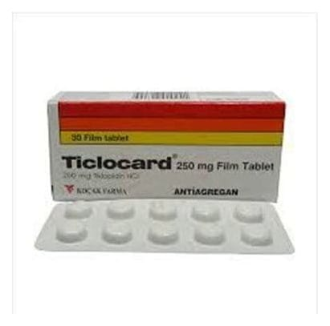

Ticlocard 250 mg Film Kaplı Tablet, 30 Adet

Ne için kullanılır
KT · Bölüm 1TİCLOCARD, 30 film kaplı tablet içeren blister ambalajda kullanıma sunulmuştur. Beyaza yakın renkte iki yüzü bombeli yuvarlak her bir film kaplı tablet, 250 mg tiklopidin hidroklorür içerir.
TİCLOCARD trombosit adı verilen ve özellikle pıhtılaşma olayında rol oynayan kan hücrelerinin kümelenmesini engelleyen bir ilaçtır. Anti-trombotik ilaçlar grubuna dahildir.
TİCLOCARD kanın pıhtılaşmasını azaltır. TİCLOCARD damar sertliği (ateroskleroz) bulunan hastalarda kalp krizi (miyokard infarktüsü), felç ve damar hastalıklarına bağlı ölüm gibi atardamarların pıhtı ile tıkanmasına bağlı bozuklukların önlenmesi için kullanılır. Ayrıca, kalb i besleyen koroner damarların içine stent adı verilen protezin yerleştirilmesinden sonra, yeniden tıkanma olmasının önlenmesinde aspirin ile beraber kullanılır.
Doktorunuz size TİCLOCARD’ı aşağıdaki nedenlerden dolayı reçetelemiş olabilir: — Beyin damarlarınızın yeterince kanlanamaması veya bir pıhtıyla tıkanmasına bağlı felç, minör felç (felcin geçici belirtileri), geri dönüşümlü bir tür felç (geçici iskemik atak) veya tek gözde geçici körlük geçirmiş olabilirsiniz. Yeniden felç geçirmenizi önlemek için TİC LOCARD tedavisini uygun görebilir. — Bacak damarlarınızı etkileyerek sizde aralıklı topallama olmasına yol açan kronik bir damar hastalığınız olabilir. Bu durum nedeniyle kalbinizi besleyen damarlarınız yeterince kan alamayabilir, bundan doğabilecek sorunları önlemek için, TİCLOCARD tedavisini uygun görebilir. — Size uzun süredir diyaliz uygulanıyor olabilir veya bir ameliyat sırasında vücut dışı dolaşım uygulaması yapılması gerekebilir. Bu işlem sırasında, kanınızda trombosit adı verilen hücrelerin fonksiyonlarında bozukluk olmasını engellemek için, TİCLOCARD tedavisini uygun görebilir. — Kalbinizi besleyen koroner damarlarınız içine stent adı verilen protez yerleştirilmiş olabilir. Bu işlemden sonra gelişebilecek yeni tıkanmaları önlemek için TİCLOCARD tedavisini uygun görebilir.